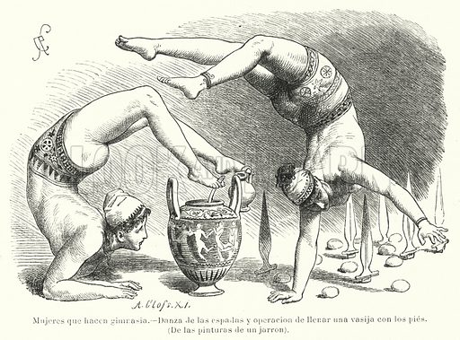

Fitness, as we know it today, seems to be a relatively modern invention - something that started vaguely in the 70s with jogging and jazzercise. But physical exercise goes back much further than that, to a time where people wouldn't have thought of it as working out, but rather a way of life. Centuries and millennia ago, they did not have all the machines and weights and gyms that we have today, and yet they were in better shape than we are. To understand why this is, how we got to our modern fitness culture and what we have lost along the way, it is helpful to take a look at the history of exercise. In a previous article on the philosophy of "MovNat", it speaks about the history of physical training before there were modern gyms and workout programs.
The evolution of fitness can be credited to man’s need for survival and can be traced back to the beginning of mankind when people would remain physically fit to haunt and survive. The first gymnasiums were dated over 3,000 years ago, in ancient Persia, where they were known as Zurkhaneh, as areas that encouraged physical fitness.The word ‘gymnasium’ is derived from the Greek word ‘gymos’, which means naked.

The earliest records indicate that around 2,000 B.C (over 4,000 years ago) the Egyptians formally introduced structured acrobats and fitness training. Egyptian culture saw acrobatics as both entertainment and sport, and its practitioners realized that to excel in this early form of physical performance they had to train appropriately. This led to the introduction of structured fitness regimens involving bodyweight calisthenics. The Egyptians were not the only civilization to realize exercise was important or as we might say today, exercise is medicine. During this period of time, it is believed the Chinese practiced a form of exercise called"Kung Fu" that used a combination of breathing and formalized fluid movements.
While the Chinese and Egyptians are credited with introducing structured exercise, it wasn’t until the Greeks introduced formalized training for competitive athletes that fitness finally received cultural acceptance. At the peak of the Greek civilization, fitness was seen as critical to martial prowess (i.e., fighting), restorative capability (i.e., healing of the body, mind, and soul) and educational (introduced into the post-secondary education system). Two quotations are the greatest way to describe how the Greeks exercise. The first is a quote attributed to the famous Greek physician Hippocrates who lived between 460 and 377 B.C: " If we could give every individual the right amount of nourishment and exercise, not too little, and not too much, we could have found the safest way to health." The second quote, and equally profound, is from the famous Greek philosopher, Plato, who said: " Lack of activity destroys the good condition of every human being, while movement and methodical physical exercise save and preserve it."
Gyms formally came into existence in ancient Greece. For some reason, once Greek culture lost prominence, so did the pursuit of structured fitness as a part of the human condition. It took nearly 2,000 years for fitness to regain a foothold. In 1569, an Italian, Hieronymus Mercuialis, published the book "De Arte Gymnastica Aput Ancientes" in which he described the use of medicine balls, dumbbells, bodyweight movements, and other gymnastic-like movements for physical training. This publication seemed to spur the re-emergence of formalized fitness training. Approximately 200 years later, a German, John Basedow introduced a curriculum at his school called the Philanthropinium that used movements and training regimes from Greek gymnastics. 20 years after Basedow, Johann Gutmuth, known as the grandfather of German physical education, authored " gymnastics for Youth: A Practical Guide to Healthful and Amusing Exercise for the use of Schools. " These two landmark publications and their focus on making fitness part of the educational curriculum for the youth to improve their physical health.
Gyms were usually a locality for the education of young men, which included physical education and bathing and studying. The ancient Greek gymnasiums were places where athletes trained for public games such as the Olympics. After this, gyms disappeared for centuries. By the 19th century, schools and colleges started building gymnasiums. The YMCA built several gyms for physical exercise, social sports, and games.
In 1965 and 1970s, gymnasium chains came into existence. In 1965, the Gold’s gym chain was founded by Joe Gold in Venice, California and it became a landmark for bodybuilders. By the 1980s, gyms were common and many gyms chains were founded, such as 24 Hour Fitness (1983) and LA Fitness (1984). It was in this era that corporate gyms came into existence as employers were keen on getting their employees fit and healthy.
In his examination of Chinese physical cultures, Nigel B.Crowther found that lifting weights, archery, weight throwing, tug of war, boxing, and a host of other activities were practiced by Chinese me in the ancient world. This is perhaps unsurprising given the long history of Chinese martial arts.
In ancient Egypt, lifting weights was an equally popular practice. Egypt, although different from China, still shared similarities when it came to physical culture. In Ancient Egypt, lifting weights was one of many sports engaged in by local soldiers, athletes, and regular men and women to improve their health. Lifting weight was so widespread in Ancient Egypt that it spread from Egypt to far-flung places like Rome, Greece, Cartage, and Phoenicia.
In Ancient Greece , stone lifting, calisthenics, and rudimentary forms of dumbbell training were practiced by soldiers, athletes, patients, and a host of other groups to train their bodies. Exercising was of utmost value in Greek city-states, for numerous populations.
Return to the top of the page.